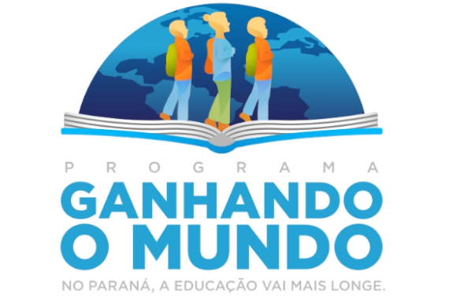

As inscrições para o programa de intercâmbio Ganhando o Mundo, do Governo do Estado do Paraná, são realizadas digitalmente através da Área do Aluno da Secretaria de Estado da Educação (Seed-PR). O processo exige que os estudantes cumpram critérios rigorosos de desempenho acadêmico e frequência. O unico lugar que estabeleceu ese programa é o parana por meio do governador Ratinho junior em 20219.
